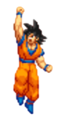
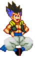
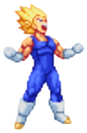
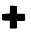
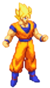

Introduction
Dragon Ball Z Supersonic Warriors 2 est un jeu de combat basé sur l’univers Dragon Ball Z, sorti sur Nintendo DS en 2006, il est la suite du jeu Dragon Ball Z Supersonic Warriors sorti sur GameBoy Advance
Gameplay
Le gameplay reste fidèle au premier opus , il propose toujours des combats en 2D aériens ou au sol, possibilités de faire des combos simples avec des attaques spéciales propres à chaque personnage sur un terrain propre à l'univers. Le tout av Les joueurs peuvent enchaîner coups de poings, coups de pieds, attaques spéciales en fonction de la position du perosnnage, enclencher des capacités lors du combat, des transformations et même des attaques ultimes, le tout fidèle à l’univers de la série.
Points communs avec le premier jeu
- Même style de combat : affrontements aériens en 2D.
- Commandes simples et accessibles pour déclencher des combos et attaques spéciales.
- Système de combats en équipe (3v3) : possibilité de changer de personnage en temps réel.
- Mode Histoire reprenant les arcs principaux (Saiyan, Freezer, Cell, Buu) avec des scénarios alternatifs « Et si… ».
- Modes de jeu variés : Histoire, Combat Libre, Multijoueur local.
- Développé par le même studio, Arc System Works.
Différences avec son prédécesseur
- Grâce au support DS, le jeu est plus beau graphiquement : sprites plus détaillés et effets spéciaux améliorés.
- Possibilité de faire des attaques combinées en fonction des personnages joués.
- Les personnages sont classés par une variable appelé Dragon Power ou Destruction Power, appelé sobrement DP, ce qui permet de faire des combinaisons de personnages plus stratégiques
- Utilisation de l’écran tactile pour gérer les changements de personnages ou déclencher certaines actions spéciales.
- Les attaques spéciales sont plus simples à sortir que sur GBA et elles sont plus variées
- Plus de personnages jouables, dont certains issus de la fin de Dragon Ball Z comme Boo ou Gotenks ou bien des films comme Cooler ou Broly.
- Possibilité de faire appel à des personnages supports tout au long du combat
- Un scénario plus riche avec encore plus d’histoires alternatives.
- Meilleure qualité sonore grâce au hardware DS.
- Le jeu utilise le double écran pour afficher les barres de vie, les portraits et certaines commandes, tout en gardant l’action principale sur l’écran du haut.
- Mode de jeu difficile appelé Mode Maximum pour tester ses capacités face à des boss durs et notamment des boss finaux plus compliqué que le mode Challenge de Supersonic Warriors.
Modes de Jeu
Comme dans les jeux de combat en général ou simplement dans les jeux Dragon Ball Z, on a les modes classiques:
Pour voir en détail l'histoire de chaque personnage du jeu, vous pouvez aller ici 
Pour voir en détail le tutoriel avec Gotenks, vous pouvez aller ici 
Pour voir en détail le mode Maximum, vous pouvez aller ici 
Personnages
Pour les personnages, à la grande différence de son prédécesseur, il y a bien plus de personnages dont ceux déjà vu dans le premier jeu, mais décliner sous plusieurs formes, comme Trunks ou Gohan qui possède une forme de base, ou bien même Cell 2e forme qui apparait aussi on peut faire appel à des personnages supports pour nous aider lors du combat, avec des effets différents
Bien évidemment il manque des personnages et c'est normal, lorsqu'on sélectionne en appuyant sur  on peut découvrir d'autres personnages cachés.
Pour voir en détail les personnages vous pouvez aller ici 